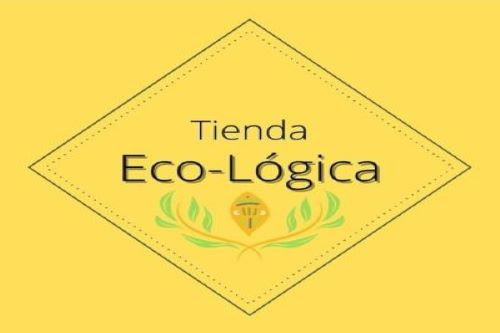

La idiología que define nuestros productos
La cosmética consciente es aquella que escucha lo que necesita la piel y lo que va más allá.
Generamos conciencia creando productos respetuosos con tu piel y con la madre tierra.
Todo el proceso se realiza de forma tradicional, sin maquinaria de industria.
Nuestra visión tiende a una concepción vegana. La base de nuestros productos es de orígen vegetal: plantas, aceites, ceras vegetales, semillas, entre otros.
Los ingredientes que utilizamos son ecológicos, para no ensuciar al organismo con sustancias nocivas.
Nuestros productos son elaborados con mucho amor, cuidamos al máximo cada parte del proceso y cada detalle.
Queremos transmitirte este cuidado.
¡¡Gracias por tu visita!!